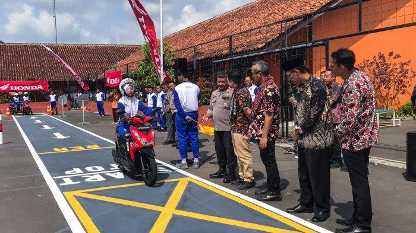
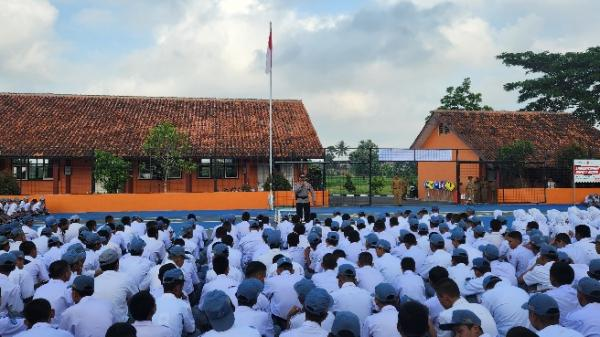
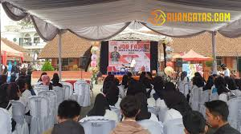
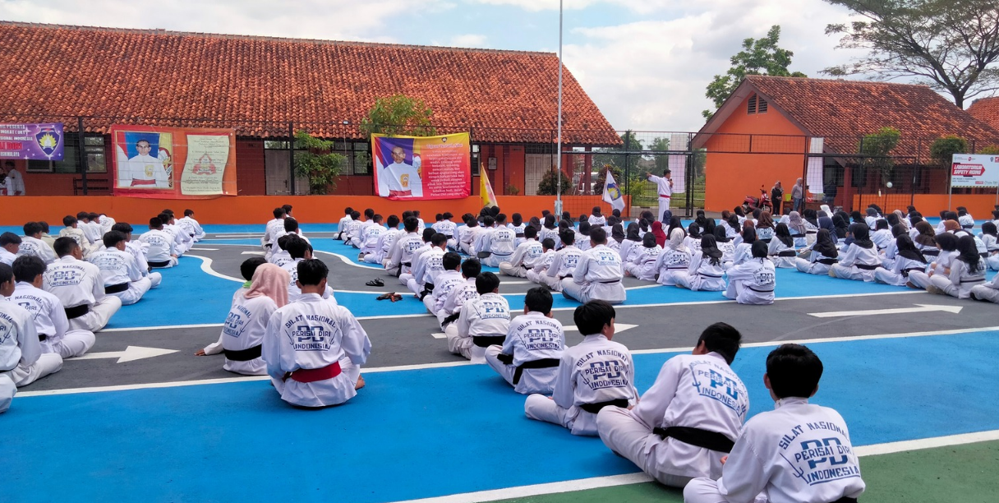

SMKN 4 TASIKMALAYA
BERANDA
PROFIL SEKOLAH
VISI MISI SEKOLAH
EKSTRAKULIKULER
GALERI
BIODATA
EKSTRAKULIKULER SMK NEGERI 4 TASIKMALAYA
GALERI SMKN 4 TASIKMALAYA

safetyriding
LIHAT SELENGKAPNYA

sosialisasi polsek cibeureum
LIHAT SELENGKAPNYA

job fair
LIHAT SELENGKAPNYA

320 Pesilat Perisai Diri Ikuti UKT Periode 72 di SMKN 4 Tasikmalaya, Penerimaan Anggota Baru
LIHAT SELENGKAPNYA